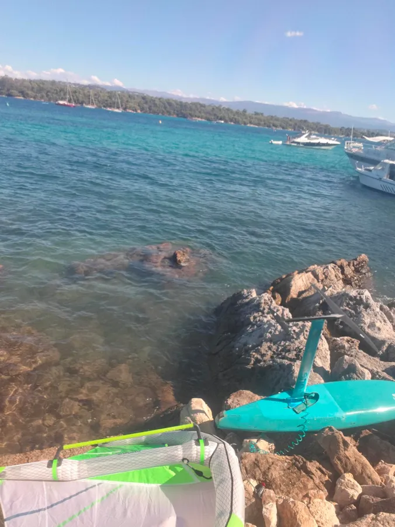
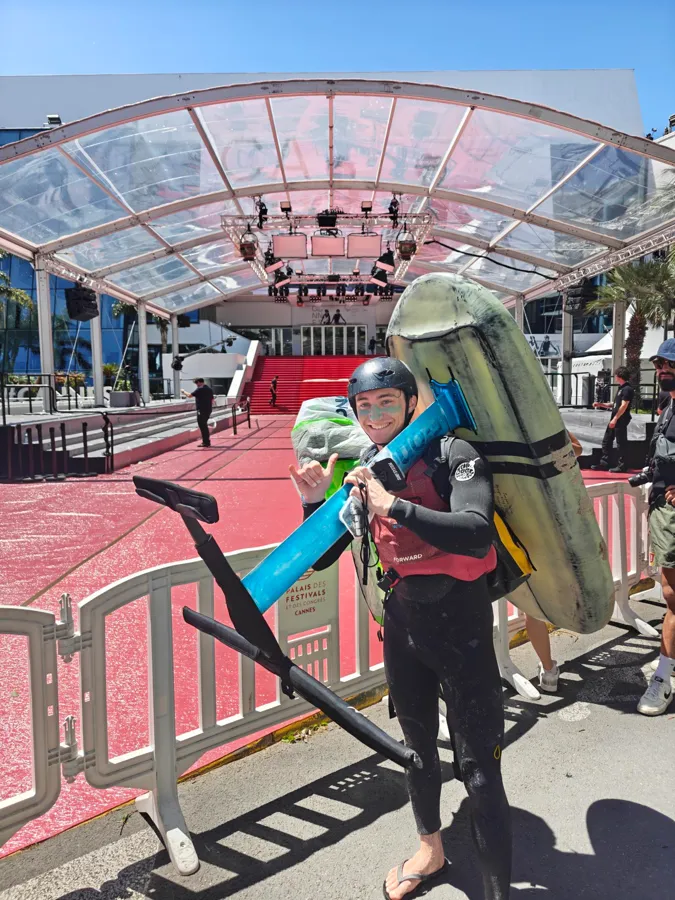
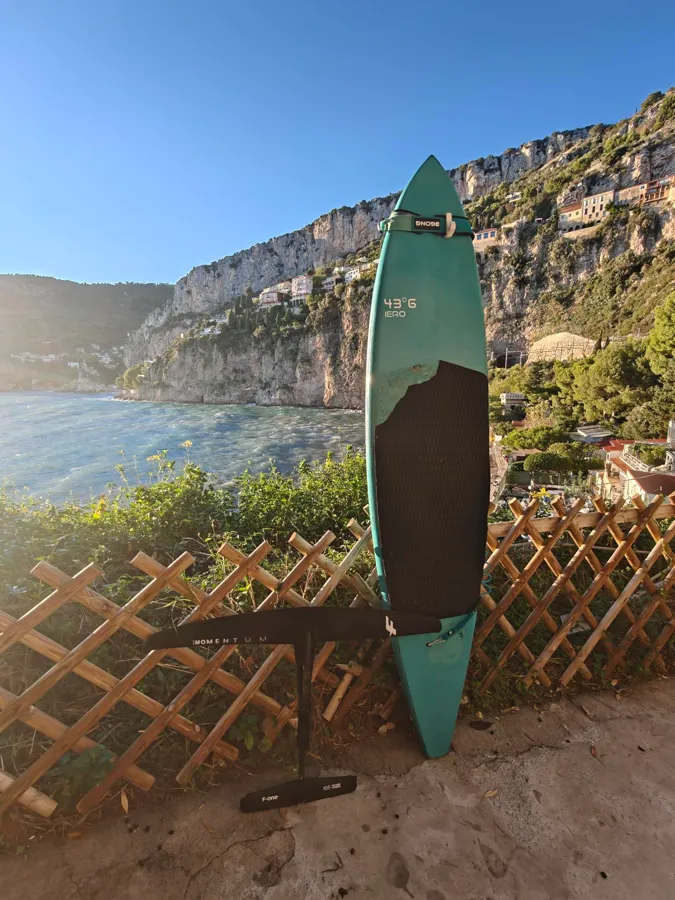
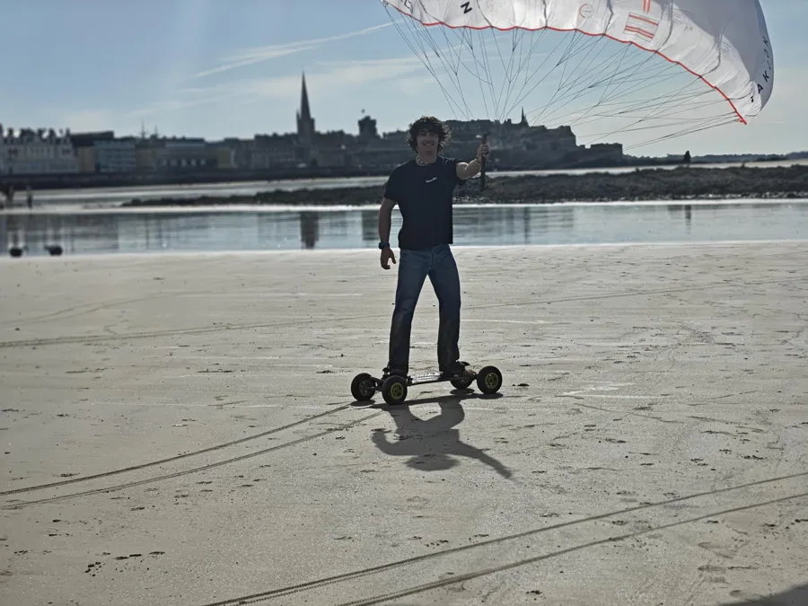

Hi, I'm Corentin Bel. I'm a PhD researcher studying how language lives in human brains and in AI models — decoding words from MEG signals, including the ones we never say out loud. Away from the magnetometers you'll find me on a hydrofoil, under a paraglider, or cooking for a crowd.
🧠 wander my mind — explore this page as a connectome, fog-of-war includedMy PhD (ENS-PSL · NeuroSpin, CEA · Meta AI) asks a simple question with a hard answer: when you read, listen, or speak silently in your head, what do the magnetic fields around your skull give away? I build decoding pipelines over naturalistic language — audiobooks, stories, produced sentences — to find which levels of language (sound, words, syntax, meaning) can be read back out, and which survive across modalities.
Each stop added one layer: vision, brains, scale, speed — then altitude.
Decoding words and sentences from non-invasive brain recordings — and the open tooling to do it at scale.
Google Scholar →Mostly wind, waves and brains — the recurring theme was not planned.
Not my day job — the questions I follow anyway.
Downwind foiling on the Côte d'Azur, kites when the sea is gone.




Everything I love outside research is a flow field.